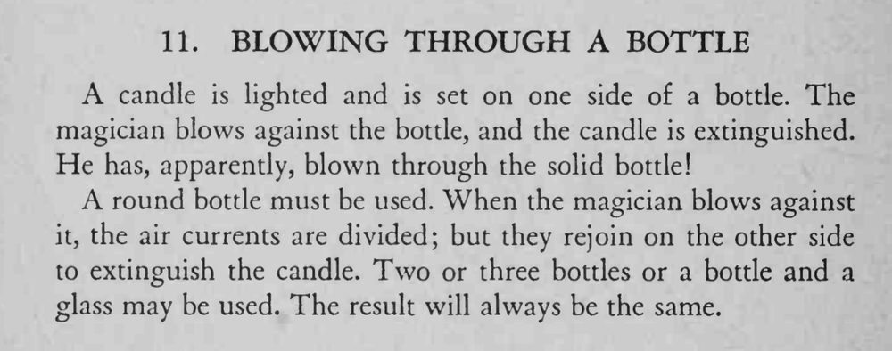

蜡烛放在瓶子另一侧，魔术师对着瓶子吹气，蜡烛竟被吹灭了，仿佛气是穿过瓶子过去的。
必须用圆瓶，吹气要压低、正对瓶身，让气流绕过瓶子在烛火处合拢。

A candle is lighted and is set on one side of a bottle. The magician blows against the bottle, and the candle is extinguished. He has, apparently, blown through the solid bottle! A round bottle must be used. When the magician blows against it, the air currents are divided; but they rejoin on the other side to extinguish the candle. Two or three bottles or a bottle and a glass may be used. The result will always be the same.